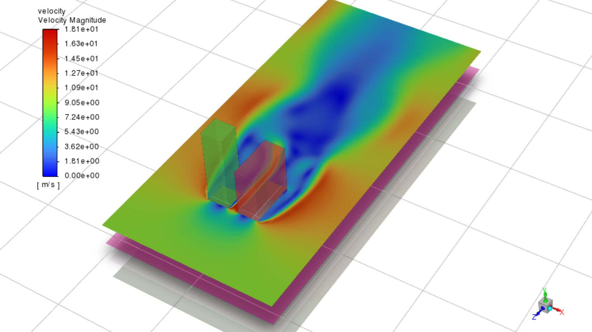

Flow Through Buildings
By Altamash Tamboli
In the field of pedestrian wind comfort, CFD (Computational Fluid Dynamics) modeling has become an essential tool for analyzing wind flow around buildings. This method involves the use of computer algorithms to simulate the airflow around a building and to analyze its impact on the surrounding environment.
The simulation of the wind flow between a high-rise and a low-rise building is particularly challenging because of the complex interactions between the buildings. The high-rise building may create a wind tunnel effect, which could lead to dangerous wind speeds in the pedestrian areas. The low-rise building may also cause turbulence and vortices, which could create uncomfortable and dangerous conditions for pedestrians.
- To simulate the wind flow between the two buildings, the designer would first create a 3D model of the buildings and their surrounding environment. This model would include the geometry of the buildings, the terrain, and the atmospheric conditions (e.g., wind speed and direction).

-
The next step would be to specify the boundary conditions of the simulation. This would include the wind speed and direction, as well as any other relevant environmental conditions (e.g., temperature and humidity).
-
Once the boundary conditions have been specified, the CFD software would solve the Navier-Stokes equations, which describe the motion of fluids. The software would also apply the boundary conditions to the simulation, and calculate the resulting wind flow around the buildings.
-
The output of the simulation would be a series of visualizations of the wind flow around the buildings, including velocity vectors, pressure distributions, and turbulence levels. The designer could use these visualizations to identify potential problems, such as high wind speeds in pedestrian areas or dangerous turbulence levels.

By using CFD modeling in the early design stage, designers can identify and correct potential wind-related problems before they become actual problems. This can help to ensure the safety and comfort of pedestrians in the surrounding area and can also reduce the cost and time involved in prototyping and testing.

- mesh credits:Ansys